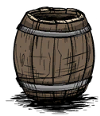

This article has been removed from the game / will not be implemented. The information presented here is for reference only. |
| Barrel | |
|  |
|
| Drop | |
| DebugSpawn | "monkeybarrel" |
| “ | Did that barrel just move? | ” |
| –Wilson | ||
Much like Slurtle Mounds will spawn Slurtles and Snurtles, the Barrel is a structure found in Caves from which Splumonkeys would emerge (a reference to the phrase more fun than a barrel of monkeys).
When an earthquake occurs, or a Splumonkey has been killed by the player, the barrels would stop spawning Splumonkeys, and all previously spawned Splumonkeys would return to their barrel.
The Barrel was flammable, and burning it would force out Splumonkeys. This would destroy the Barrel and yield Ashes.
As of A Moderately Friendly Update, the Barrel was removed, and replaced with the Splumonkey Pod.